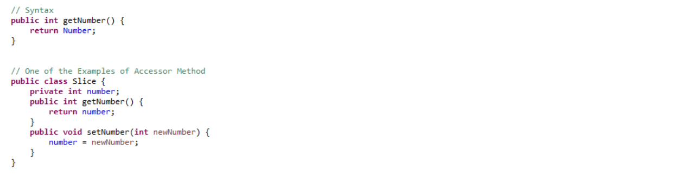
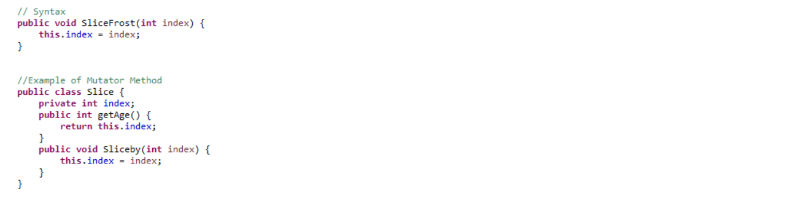

ACCESOR AND MUTATOR METHOD
Accessors
An Accessor Method is generally known as a get technique or essentially a getter. A property of the item is returned by the accessor strategy. They are proclaimed as open. A naming plan is trailed by accessors, at the end of the day they add a word to get in the beginning of the strategy name. They are utilized to restore the estimation of a private field. A similar information type is returned by these techniques relying upon their private field.

Mutator
A Mutator Method is usually known as a set strategy or just a setter. A Mutator technique transforms things, at the end of the day change things. It shows us the rule of exemplification. They are otherwise called modifiers. They are handily spotted in light of the fact that they began with the word set. They are announced as open. Mutator Method don't have any return type and they additionally acknowledge a boundary of a similar information type contingent upon their private field. After that it is utilized to set the estimation of the private field. The Mutator method in java, and any object-oriented programming language, is a is also type that enables you to change the variables inside the class. Private is the access-level for the variables, meaning the only way to change the variables is by using the mutator methods. This way, the mutator methods can control the validity and quality of the data saved in the class. For example a method name setRadius() is a mutator method. You could modify this method to add some data validation. For instance, an example of data validation could be checking if the new radius is a negative number.
Conclusion
To summarise, we have seen that mutator methods and accessors methods in java are methods that enable us to read and write class variables. Their main focus and purpose is helping us to design classes that are well encapsulated and decoupled from each other. familiarizing ourselves with the naming conventions that you should follow when declaring these methods helps us better understand the Accesssor and Mutator Methods in Java Programming. However, how are these methods useful? To sum up, the main benefit is encapsulation. This basically means that by creating these methods, user can hide the internal details of classes from other components. Other components can only communicate via the API. Consequently, classes are decoupled; they don’t rely on each, allowing users to develop in isolation, which leads to faster developments since team members can create different classes and components in parallel. Besides easing maintenance, since components can be modified, with a small impact on other dependant components.